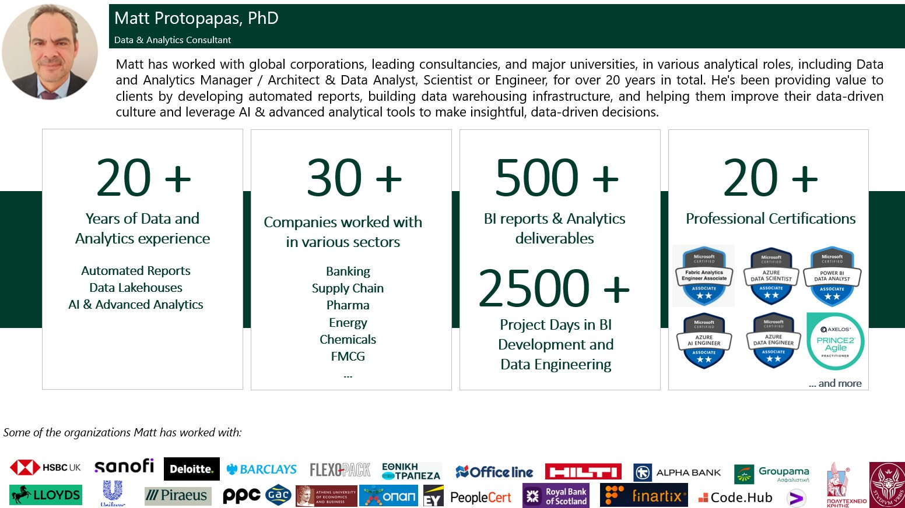

{kind=link}

I'm Matt Protopapas, an independent Data & AI consultant and founder of Kedros Analytics. I help SMEs make better decisions with affordable, enterprise-grade analytics. Leveraging my experience across 30+ European organizations and modern AI tools, I deliver solutions up to 10× faster and at less than 10% of the traditional cost.
Logistics
See how demand planning, OTIF visibility and reorder optimization help SMEs buy the right amount, at the right time.
Logistics examples →Financial Planning
See how rolling forecasts, margin monitoring and self-service variance analysis sharpen budget decisions.
FP&A examples →Marketing
See how campaign tracking, market basket analysis and lead scoring point marketing budget at what actually converts.
Marketing examples →Full-stack delivery
From automated pipelines to 'boardroom ready' dashboards, we design and build the whole analytical value chain... >10x more productively, with AI.
Built for scale
Every AI chatbot, predictive model and reporting app is built to hold up as your data grows — governance and quality are factored in from day one.
AI, where needed
Predictive models, AI agents and chatbots make the cut only when they measurably help with real decisions — not because they're trendy.
Recent Projects
Global 500 Company
Contributed to the design of a Control Tower, developed Power BI dashboards on 3PL performance & OTIF measurement, and refactored data models, improving the cost-benefit ratio by > 400%.
Europe 500 Company
Led a team to create a Medallion Lakehouse on Microsoft Fabric and to migrate data assets from Databricks and Synapse, enabling solid governance, quality and a consolidated view, though BI reports and self-service analytics.
Global Manufacturer
Designed the data & analytics architecture in Microsoft Fabric and developed semantic & data products to power AI-driven recommendations, helping sales teams worldwide manage opportunities proactively.
👩👨 Testimonials
I hired Matt to develop advanced custom Power BI solutions. He successfully managed complex data requirements and delivered BI reports that met our technical specifications.
Javier Fernandez Linares
Global Supply Chain Analytics Manager, Global 500 Pharma
We had the privilege to co-operate with Matt, an excellent professional with an out of the box thinking and always willing to assist. I do recommend Matt for complex projects.
Ioannis Fousteris
Group ICT Director, Leading Greek manufacturer
I worked with Matt for over a year to create advanced BI reports. I like his ability to connect with people, his professionalism and team skills and I recommend him for any such role.
Angelos Paidas
Head of e-Mobility Products & Services, Europe 500 Energy
How we can work with you
Consulting
I am here to guide you through every step of your analytical journey. From crafting the roadmap to providing guidance to your team, I help you leverage Data & AI to streamline decisions and drive value.
End-to-End Projects
With my solid experience in Data & Analytics, I can make sure that automated data pipelines, BI apps and AI-powered Analytics are properly integrated into your decision processes, together with my partners.
Contract work
I can work within your team full-time, for the scope you specify and a fixed time period (6+ months for optimal value generation). View my CV for relevant international projects & teams I've worked with.
Relevant insights
Short videos on analytics, data preparation and AI tools you can put to work in your own organization.

Self-Service Analytics with AI Tools
How AI-powered features make self-service analytics faster and more accessible.

Preparing Data for AI in Power BI
How to structure and prepare your data so AI tools in Power BI can use it effectively.

Self-Service Analytics with Drag & Drop
Building self-service analytics with simple drag-and-drop tools, no coding required.
Free tools for SMEs
Practical, ready-to-use Python & Excel tools you can download and adapt to your own business today.